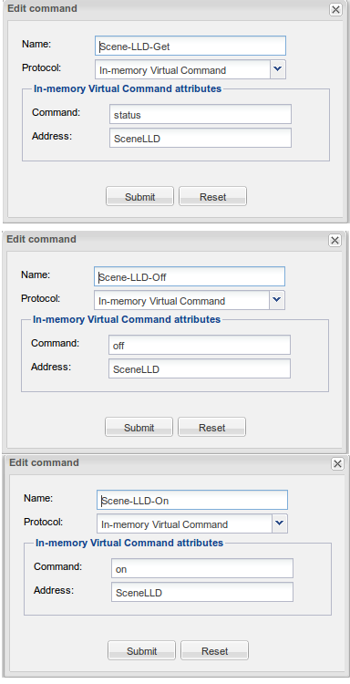
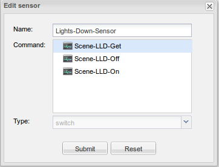
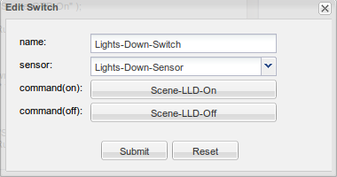
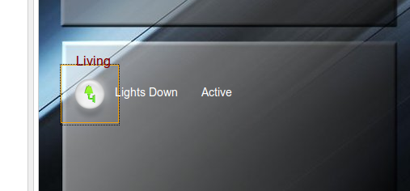
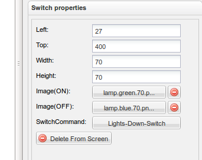
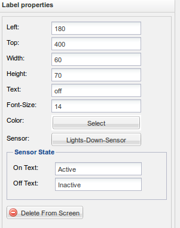
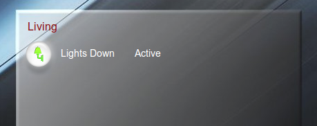
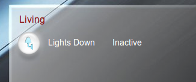

Hi
I've started a few days ago with openremote and I find the system superb. Since I've learned a lot reading the forum, I'd like to give back something showing how I set up my system to operate with scenes (I'm a big fun of the idea of scenes and I made lots of them). This is by no way a how-to (I'm too newbie for that), it is just a list of rules-sensor-tricks that work. I promise no light was hurt during the making of this post. Please give me any advice how to do this better/faster/cooler.
My idea was to have a scene that would run automatically at a given time, reporting to my (android) interface its status, and be controllable by the interface as well. Practically: At 23.00 the system should start dimming the lights of the living room, 3 % every each 10 minutes up when the light level it's 3. This scene should appear in the panel interface. I want to be able, however, to switch off the rule progress and switch it back when I need. Lights are controlled via zwave devices hooked up to a zwave.me on-board controller mounted on a raspberry (wheezy). I use http commands to communicate with them. It does not really matter which device you have. The lights are dimmed with a command "LD1 set" that accepts a parameter to set the dim level.
Step 1.
a) Define a new device called (or whatever you want) "Scene lights-down".
b) within the device define 3 in-memory Virtual commands as follows:

Please notice "on" is case sensitive (I spent sometime on this forum because of that  )
)
c) Within the device define a sensor hooked up to the get command above:

Finally, define a switch as follows:

Step 2. Define the rules needed for the scene to operate in "Config the controller -> rules":
here are the rules (with standard imports):
package org.openremote.controller.model.event global org.openremote.controller.statuscache.CommandFacade execute; global org.openremote.controller.statuscache.SwitchFacade switches; import org.openremote.controller.protocol.Event; import java.lang.Integer; // ________________ // this starts the scene a 22.50. This is done every day // ________________ rule "Living Lights Down Start" timer (cron: 0 50 22 * * ?) when eval(true) then execute.command( "Scene-LLD-Get","on" ); System.out.println("Rule Living Lights Down active"); end // ****** // this dims down the lights every 10 minutes if they are not already at 3 and the scene is on and is not later than 3 a.m // ******* rule "Living Lights Down" timer (cron: 0 0/10 23-3 * * ?) when Event(source == "DimSensor", value > 3) Event(source == "Lights-Down-Sensor", value == "on" ) $evt: Range( source == "DimSensor") then execute.command("LD1-Set",$evt.getValue()-3); execute.command( "Scene-LLD-Get","on" ); System.out.println("Rule Living Lights Down working"); System.out.println("Setting LD1 to level "+ ( $evt.getValue()-3) ); end // ****** // at 3 a.m. the rule is put to off and the lights are off (usually other scenes would off the lights already, but just in case one forgets) // ***** rule "Living Dies" timer (cron: 0 0 3 * * ?) when eval(true) then execute.command( "Scene-LLD-Get","off" ); System.out.println("Rule Living Lights Down stop"); end
Step 3: set up the interface:
Make a panel called "scenes" (or whereever you want to control and monitor the scene).
Define a switch in the panel associated with the switch define in step 1:

defined as:

Choose two different icons for "on" and "off" state.
Add two labels, one with the name of the scene ("Lights down" in my case) and one with "..." text, the latter associated with the sensor as follows:

save, reload, etc. and you are done.
What you have is a automatic scene, which does actions for a while and then stop. It's status appears in your controller and you can halt it or activate again as you please. Something like:

I hope this can help who is just started with openremote. Thanks guys for this great software which is giving my house a life!!
{kind=link}
{kind=link}
{kind=link}
{kind=link}
{kind=link}
{kind=link}
{kind=link}
{kind=link}
{kind=link}
|
Marcello, This is excellent work and thanks for sharing it back to the rest of the community. We can only hope more people pick up your lead and start doing the same. That's what make communities work. I'm sure your work will be helpful for many others who are also just beginning with OpenRemote. Even if you are new it means you are writing from a perspective of a new user and others who are also new will share the same perspective. I think I'll look at a more permanent place in the Wiki to save your documentation effort. |
|
I've started a wiki page for your guide and copied the content (with slight copy-editing): OpenRemote 2.0 How To - Scheduled Scenes. Feel free to add to the page, modify it, as you wish. Posting more content here on the forums section is fine too, if you prefer. |
|
Thanks, that's great. I hope I can contribute some more as I progress in learning OR. |
|
Marcello, I started with OpenRemote during the good old days when status was polled continuously with some kind of a polling interval. That way the group address of my KNX commands for a switch - on, off and status were the same. I had a perfectly working switch without worrying about a separate group to keep track of status. The continuous polling was disabled to avoid load on the controller which was the way to go, but, this messed up with my switch sensor. This meant the more the switches the more groups just to keep track of switch status. The good folks at OR later came out with the slider which I was absolutely in love with. This also caused a major heartburn, I was using a KNX DALI gateway for my lighting. I could only choose between value status object or switch status object. I went for the value object to implement the slider and choosing the group address of on off commands for the status. The switch status was getting updated if I used physical keypad but if the light was controlled through my iPod touch the status would not work. I have modified your tutorial to finally solve the problem using the following code in rules. Slider Sensor - The sensor that is used for sensing value of the light that I want to create a switch for. Switch-Status-Get - In-memory Virtual Command created sensor with Switch-Status-Get I used this sensor for my KNX switch. package org.openremote.controller.model.event global org.openremote.controller.statuscache.CommandFacade execute; global org.openremote.controller.statuscache.SwitchFacade switches; import org.openremote.controller.protocol.Event; import java.lang.Integer; rule "Lights On State" when Event(source == "Slider Sensor", value > 0) $evt: Range( source == "Slider Sensor") then execute.command( "Switch-Status-Get","on" ); System.out.println("Light On State"); end rule "Lights Off State" when Event(source == "Slider Sensor", value == 0) $evt: Range( source == "Slider Sensor") then execute.command( "Switch-Status-Get","off" ); System.out.println("Light Off State"); end I did not know how to post the code looking as good as all the wonderful folks out here and am guilty of not putting effort prior to this post. I must give due credit to Juha's post How to Post Code Block Thank you again my friend. Juha, Marcus, Eric and all the wonderful folks out there at OR keep up the good work. You guys rock !!! Edit - removed duplicate code which was caused by pasting the code twice. |
|
Grazie Marcello |